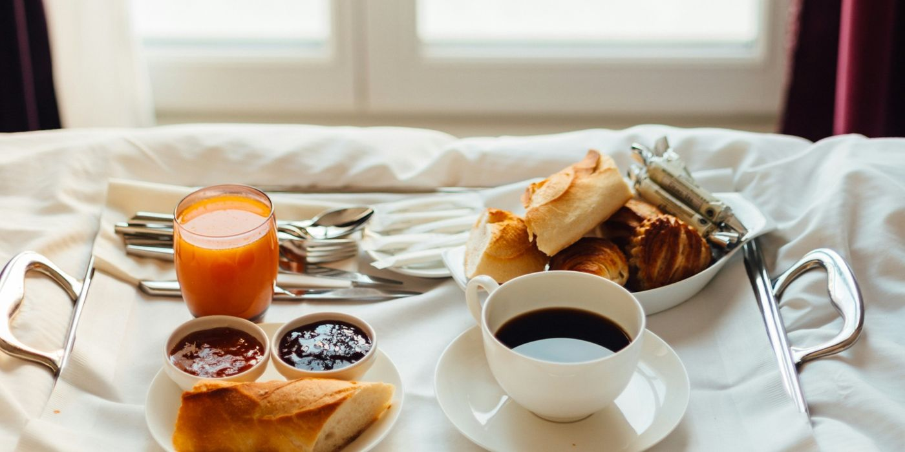

The Chic Carry-On: Packing for a Weekend in Paris
One good bag, a handful of pieces that all work together, and the accessories that make travel look effortless.

The most elegant travellers are rarely the ones with the most luggage. They carry one good bag, a few pieces that all combine, and accessories that do the work of a whole outfit. Here is how to pack a weekend in Paris, or anywhere, the quiet way.
The bags
- A structured weekender. Leather or heavy canvas, with a shape that holds when it is half full. It should fit in the overhead bin and look just as good on a hotel luggage rack.
- A soft tote for the day. Big enough for a scarf, sunglasses and a book. Leave the logo bags at home; a plain tote in black, tan or ecru goes with everything.
- A small crossbody for the evening. Keys, phone, lipstick. Nothing more.
The outfits
Pack in one palette so everything mixes: navy, black, cream and camel, with one accent colour at most. Travel in your bulkiest pieces, the coat and the knit, so the bag stays light.
- A long coat that works over everything
- Straight jeans and one pair of fluid trousers
- A fine knit, a white shirt and a silk top
- One dress that goes from lunch to dinner
- Loafers for walking, and one slightly dressier pair
Sunglasses
The fastest way to look put together after a flight. Choose a shape that suits your face and that you will wear every day rather than a trend frame. Miu Miu is known for sunglasses with a playful, feminine edge; a classic black or tortoiseshell frame is the quiet alternative.
The cap
A cap is the travel accessory people forget, and it solves a lot: bad hair after a night train, bright sun in the south, a rainy morning in the city. Keep it plain, in wool, cashmere or cotton, in a neutral that matches your coat. Acne Studios makes caps and beanies in exactly that understated spirit.
The rule
If a piece only works with one other piece, leave it at home. Everything in the bag should earn its place twice.